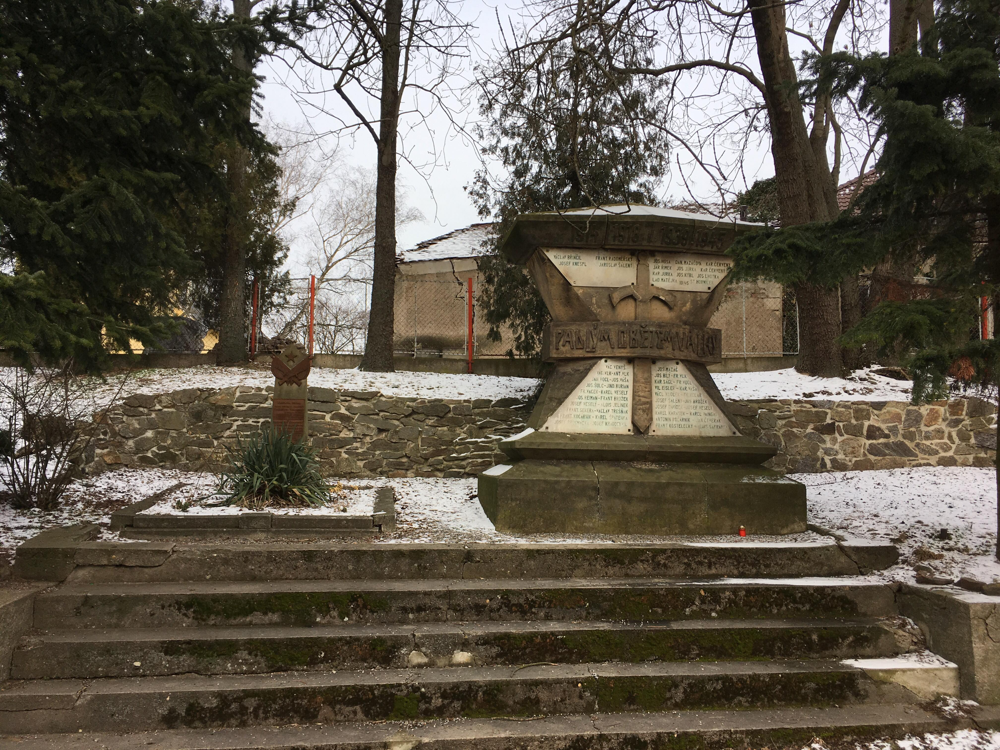
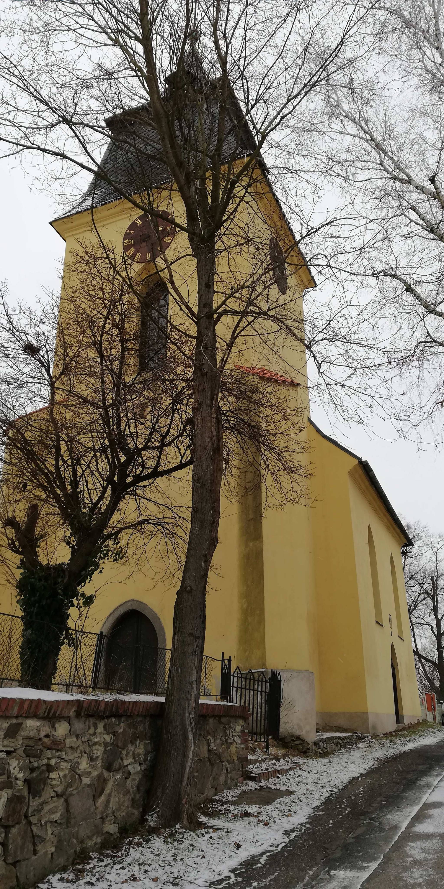
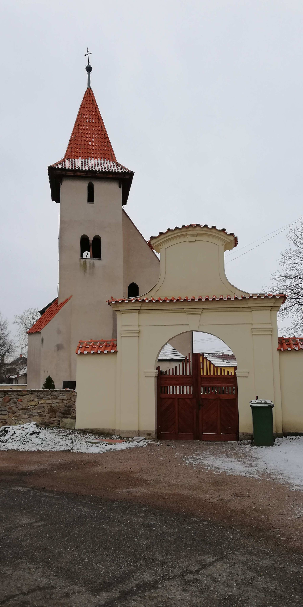
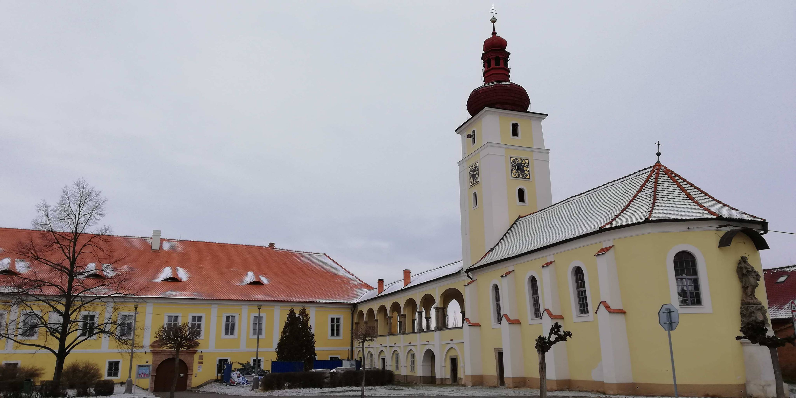
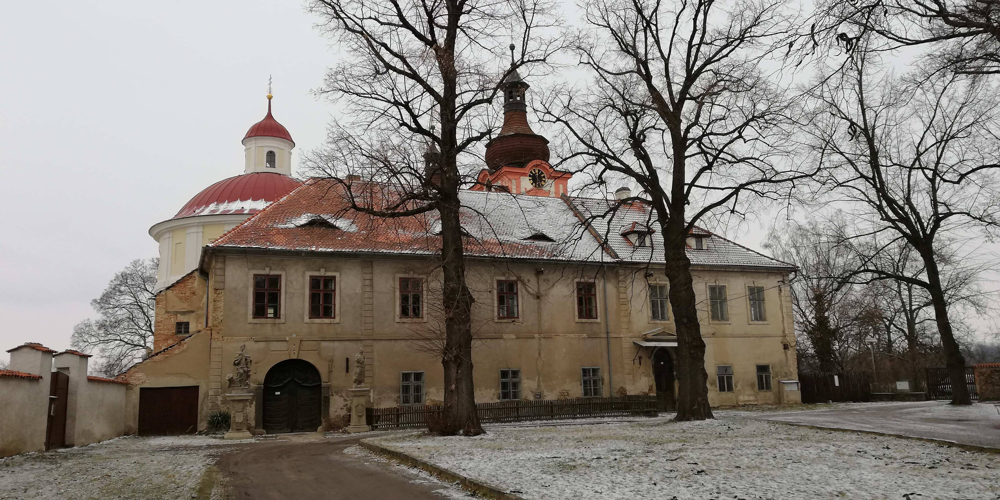
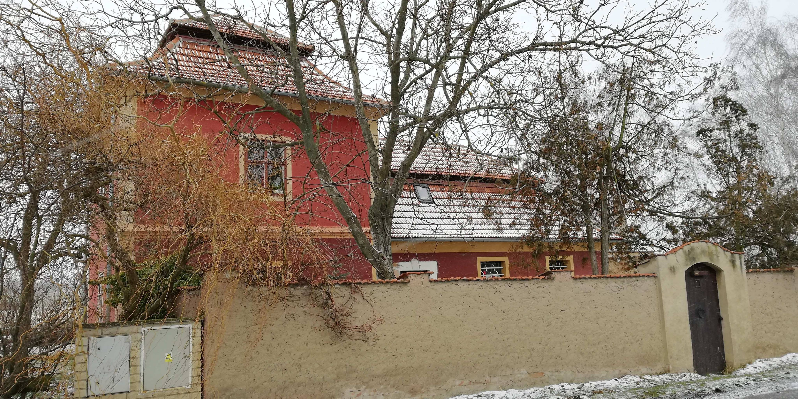

<!DOCTYPE html PUBLIC "-//W3C//DTD XHTML 1.0 Strict//EN" "http://www.w3.org/TR/xhtml1/DTD/xhtml1-strict.dtd">
<html xmlns="http://www.w3.org/1999/xhtml" lang="cs" xml:lang="cs">
<head>
    <title>Jarní putování se sv. Jakubem 2018</title>
    <meta charset="utf-8"/>
    <script type="text/javascript" src="http://api.mapy.cz/loader.js"></script>
    <script type="text/javascript">Loader.load();</script>
</head>
<body>

<div class="container-map" id="map"></div>

<script>
    var zoom = 6;
    var mapa = new SMap(JAK.gel("map"), null, zoom);
    mapa.addDefaultControls();
    mapa.addControl(new SMap.Control.Sync({bottomSpace: 0}));

    mapa.addDefaultLayer(SMap.DEF_OPHOTO);
    mapa.addDefaultLayer(SMap.DEF_OPHOTO0203);
    mapa.addDefaultLayer(SMap.DEF_OPHOTO0406);
    mapa.addDefaultLayer(SMap.DEF_TURIST);
    mapa.addDefaultLayer(SMap.DEF_HISTORIC);
    mapa.addDefaultLayer(SMap.DEF_BASE).enable();

    var layerSwitch = new SMap.Control.Layer();
    layerSwitch.addDefaultLayer(SMap.DEF_BASE);
    layerSwitch.addDefaultLayer(SMap.DEF_OPHOTO);
    layerSwitch.addDefaultLayer(SMap.DEF_TURIST);
    layerSwitch.addDefaultLayer(SMap.DEF_OPHOTO0406);
    layerSwitch.addDefaultLayer(SMap.DEF_OPHOTO0203);
    layerSwitch.addDefaultLayer(SMap.DEF_HISTORIC);
    mapa.addControl(layerSwitch, {left:"8px", top:"9px"});

    var markers = new SMap.Layer.Marker();
    mapa.addLayer(markers).enable();  
    

    var znacky = [];
    var souradnice = [];

    var data = {"Start/Cíl": {coord: "49°58.94833'N,15°17.63935'E", url: SMap.CONFIG.img+"/marker/drop-blue.png", descrip: "v sále kulturního domu ", letter: "S/C"}, 
	        "Kontrola a aktivity": {coord:  "49°58.70253'N,15°17.98887'E", url: SMap.CONFIG.img+"/marker/drop-red.png", descrip: " ", letter: "K/A"},
	        "Kaple": {coord:  "49°58.67272'N,15°18.05070'E", url: SMap.CONFIG.img+"/marker/drop-red.png", descrip: "Výstava obrazů v kapli na hřbitově ", letter: "Z/V"},
		"Malín - Památník": {coord:  "49°58.01630'N,15°18.14528'E", url: SMap.CONFIG.img+"/marker/drop-red.png", descrip: "Památník obětem 1. a 2. sv. války ", letter: "P"},
    		"Kostel sv. apoštolů Jana a Pavla": {coord:  "49°58.03493'N,15°18.16912'E", url: SMap.CONFIG.img+"/marker/drop-red.png", descrip: " ", letter: "A/Z"},
    		"Kostel sv. Štěpána": {coord:  "49°58.01005'N,15°18.29982'E", url: SMap.CONFIG.img+"/marker/drop-red.png", descrip: " ", letter: "K/A/Z"},
		"Vodojem": {coord:  "49°58.15017'N,15°19.29817'E", url: SMap.CONFIG.img+"/marker/drop-red.png", descrip: " ", letter: "Z"},
		"Kostel sv. Martina": {coord:  "49°58.23795'N,15°19.40332'E", url: SMap.CONFIG.img+"/marker/drop-red.png", descrip: " ", letter: "A/Z/V"},
		"bývalý zámek": {coord:  "49°58.25222'N,15°19.36125'E", url: SMap.CONFIG.img+"/marker/drop-red.png", descrip: "dnes škola ", letter: "A/Z"},
		"Mariánský sloup": {coord:  "49°58.24673'N,15°19.46490'E", url: SMap.CONFIG.img+"/marker/drop-red.png", descrip: " ", letter: "Z"},
		"Nove Dvory - Památník": {coord:  "49°58.25108'N,15°19.48872'E", url: SMap.CONFIG.img+"/marker/drop-red.png", descrip: "Památník obětem 1. a 2. sv. války ", letter: "P"},
		"Muzeum": {coord:  "49°58.21785'N,15°19.42772'E", url: SMap.CONFIG.img+"/marker/drop-red.png", descrip: "Pamětní síň Nových Dvorů ", letter: "K/A/Z"},
		"Chodkovská hrobka": {coord:  "49°58.23235'N,15°19.63660'E", url: SMap.CONFIG.img+"/marker/drop-red.png", descrip: " ", letter: "Z"},
    		"Kostel sv. Anny a bývalý klášter": {coord:  "49°58.33410'N,15°19.55068'E", url: SMap.CONFIG.img+"/marker/drop-red.png", descrip: " ", letter: "Z"},
    		"Červený domek": {coord:  "49°59.16427'N,15°19.19715'E", url: SMap.CONFIG.img+"/marker/drop-red.png", descrip: " ", letter: "Z"},
		"Hlízov - Památník": {coord:  "49°59.01922'N,15°17.63863'E", url: SMap.CONFIG.img+"/marker/drop-red.png", descrip: "Památník obětem 1. sv. války ", letter: "P"},}
    
    for (var name in data) { 
    var c = SMap.Coords.fromWGS84(data[name].coord);
    var znacka = JAK.mel("div");
    var obrazek = JAK.mel("img", {src: data[name].url});
    znacka.appendChild(obrazek);
    
    var popisek = JAK.mel("div", {}, {position:"absolute", left:"0px", top:"2px", textAlign:"center", width:"22px", color:"black", fontWeight:"bold"});
    popisek.innerHTML = data[name].letter;
    znacka.appendChild(popisek); 
    
    var options = {
        url: znacka,
        title: name,
        anchor: {left:10, bottom: 1}  
    }
    
    var marker = new SMap.Marker(c, null, options);
    souradnice.push(c);
    var card = new SMap.Card();
    card.getHeader().innerHTML = "<strong>"+name+"</strong>";
    card.getBody().innerHTML = data[name].descrip;
    marker.decorate(SMap.Marker.Feature.Card, card);
    znacky.push(marker);
}
    
    
    for (var i=0;i<znacky.length;i++) {
        markers.addMarker(znacky[i]);
    }
   
    var cz = mapa.computeCenterZoom(souradnice); 
    mapa.setCenterZoom(cz[0], cz[1]);    
    
    var url = 'pesi 10 km.gpx';
    var options_gpx = {
        colors: ["red"],
	maxPoints: [1000]
};
    var r = new JAK.Request(JAK.Request.XML);
    r.setCallback(function (data) {
        var gpx = new SMap.Layer.GPX(data, null,options_gpx);
        mapa.addLayer(gpx).enable();
        gpx.fit();
    });
    r.send(url);

    
</script>

</body>
</html>